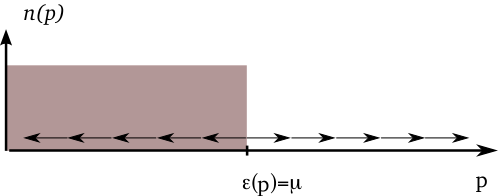
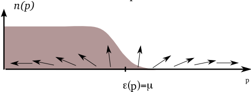

Bardeen, Cooper and Schrieffer’s (BCS) theory of superconductivity
Idea: electrons bind to form Cooper pairs that behave like bosons
The phenomena of superconductivity and superfluidity are closely linked: superconductor is ‘like’ BEC of Cooper pairs
H = \int d\mathbf{r}\left[ \sum_{s=\uparrow,\downarrow}\frac{1}{2m}\nabla\psi^\dagger_s\cdot\nabla\psi^{\vphantom{\dagger}}_s + U_0 \psi^\dagger_\uparrow\psi^\dagger_\downarrow\psi^{\vphantom{\dagger}}_\downarrow\psi^{\vphantom{\dagger}}_\uparrow\right]
H = -\frac{1}{2m}\left[\nabla_1^2+\nabla_2^2\right] + U_0\delta(\mathbf{r}_1-\mathbf{r}_2)
Check
Discussion: Cooper’s problem
In momentum space our Hamiltonian is
H =\sum_{\mathbf{k},s} \epsilon(\mathbf{k})a^\dagger_{\mathbf{k},s}a^{\vphantom{\dagger}}_{\mathbf{k},s} + \overbrace{\frac{U_0}{V}\sum_{\mathbf{k}_1+\mathbf{k}_2=\mathbf{k}_3+\mathbf{k}_4} a^\dagger_{\mathbf{k}_1,\uparrow}a^\dagger_{\mathbf{k}_2,\downarrow}a^{\vphantom{\dagger}}_{\mathbf{k}_3,\downarrow}a^{\vphantom{\dagger}}_{\mathbf{k}_4,\uparrow}}^{\equiv H_\text{int}}
Take interaction between the two species to be attractive U_0<0
Ground state of non-interacting problem is
\lvert{\text{FS}}\rangle=\prod_{|\mathbf{p}|<k_\text{F}} a^\dagger_{\mathbf{p}\uparrow}a^\dagger_{-\mathbf{p}\downarrow}\lvert{\text{VAC}}\rangle.
Application of interaction Hamiltonian H_\text{int} generates terms of form a^\dagger_{\mathbf{p}+\mathbf{q}\uparrow}a^\dagger_{-\mathbf{p}\downarrow}a^{\vphantom{\dagger}}_{-\mathbf{p}'\downarrow}a^{\vphantom{\dagger}}_{\mathbf{p}'+\mathbf{q}\uparrow}\lvert{\text{FS}}\rangle with |\mathbf{p}|,|\mathbf{p}+\mathbf{q}|>k_\text{F},|\mathbf{p}'|,|\mathbf{p}'+\mathbf{q}|<k_\text{F}
Note difference from Bose case: don’t just create pair excitations with zero centre of mass momentum \mathbf{q}=0
Nevertheless, BCS theory makes assumption that ground state involves a superposition of zero momentum pairs only
We can write such a state very generally as
\lvert{\text{pair}}\rangle\equiv\sum_{\sum_\mathbf{p}n^P_\mathbf{p}=N/2} c_{\{n^P_{\mathbf{p}}\}} \prod_{\mathbf{p}}\left[a^\dagger_{\mathbf{p}\uparrow}a^\dagger_{-\mathbf{p}\downarrow}\right]^ {n_{\mathbf{p}}}\lvert{\text{VAC}}\rangle
\Braket{\text{pair}|H_\text{int}|\text{pair}} = \frac{U_0}{V}N_\uparrow N_\downarrow+\Braket{\text{pair}|\tilde H_{\text{int}}|\text{pair}}
\tilde H_{\text{int}}=\frac{U_0}{V}\sum_{\mathbf{p}, \mathbf{p}'}a^\dagger_ {\mathbf{p}\uparrow}a^\dagger_{-\mathbf{p}\downarrow}a^{\vphantom{\dagger}}_{-\mathbf{p}'\downarrow}a^{\vphantom{\dagger}}_{\mathbf{p}'\uparrow}
Check
Why? There is some double counting of terms that is irrelevant as V\to\infty
Introduce the pair operators b^\dagger_\mathbf{p}=a^\dagger_{\mathbf{p}\uparrow}a^\dagger_{-\mathbf{p}}, b^{\vphantom{\dagger}}_\mathbf{p}=a^{\vphantom{\dagger}}_{-\mathbf{p},\downarrow}a^{\vphantom{\dagger}}_{\mathbf{p}\uparrow}
For \Braket{\text{pair}|\cdots|\text{pair}} we can replace H\to H_\text{pair} H_{\text{pair}}=2\sum_{\mathbf{p}}\epsilon_{\mathbf{p}}b^\dagger_\mathbf{p}b^{\vphantom{\dagger}}_\mathbf{p}+\frac{U_0}{V}\sum_{\mathbf{p},\mathbf{p}'} b^\dagger_\mathbf{p} b^{\vphantom{\dagger}}_{\mathbf{p}'} since 2b^\dagger_\mathbf{p}b^{\vphantom{\dagger}}_\mathbf{p}= a^\dagger_{\mathbf{p},\uparrow}a^{\vphantom{\dagger}}_{\mathbf{p},\uparrow}+a^\dagger_{-\mathbf{p},\downarrow}a^{\vphantom{\dagger}}_{-\mathbf{p},\downarrow} on these states
Looks quadratic. Can we solve it?
Nope! b^\dagger_\mathbf{p}, b^{\vphantom{\dagger}}_\mathbf{p} don’t obey canonical Bose commutation relations
Pair operators b^{\vphantom{\dagger}}_\mathbf{p} commute at different momenta [b^{\vphantom{\dagger}}_\mathbf{p},b^{\vphantom{\dagger}}_{\mathbf{p}'}]=[b^\dagger_\mathbf{p},b^\dagger_{\mathbf{p}'}]=[b^\dagger_\mathbf{p},b^{\vphantom{\dagger}}_{\mathbf{p}'}]=0\qquad \mathbf{p}\neq\mathbf{p}', but obey the hardcore constraint
(b^\dagger_\mathbf{p})^2=0 (can’t create two fermions in same state)
\lvert{N \text{ pair}}\rangle\equiv\left[\sum_\mathbf{p}c_\mathbf{p}b^\dagger_\mathbf{p}\right]^{N/2}\lvert{\text{VAC}}\rangle
\mathrm{K.E}=2\sum_\mathbf{p}\epsilon_{\mathbf{p}}\langle b^\dagger_\mathbf{p}b^{\vphantom{\dagger}}_\mathbf{p}\rangle\equiv 2\sum_\mathbf{p}\epsilon_{\mathbf{p}} \langle n^P_ \mathbf{p}\rangle,
\lvert{\text{BCS}}\rangle =\prod_\mathbf{p}\left[v_\mathbf{p}b^\dagger_\mathbf{p}+u_\mathbf{p}\right]\lvert{\text{VAC}}\rangle\qquad |u_\mathbf{p}|^2+|v_\mathbf{p}| ^2=1.
Check
Projection to fixed number N of particles matches \lvert{N \text{ pair}}\rangle\equiv\left[\sum_\mathbf{p}c_\mathbf{p}b^\dagger_\mathbf{p}\right]^{N/2}\lvert{\text{VAC}}\rangle if c_\mathbf{p}=v_\mathbf{p}/u_\mathbf{p}.
\Braket{\text{BCS}|H_\text{pair}|\text{BCS}}=2\sum_\mathbf{p}\epsilon_{\mathbf{p}}|v_\mathbf{p}|^2+\frac{U_0}{V}\sum_{\mathbf{p},\mathbf{p}'}u^*_\mathbf{p}v_ \mathbf{p}u_{\mathbf{p}'}v^*_{\mathbf{p}'}
Check
Show this
\Braket{\text{BCS}|\mathcal{O}|\text{BCS}}=\sum_N P_N \Braket{N \text{ pair}|\mathcal{O}|N\text{ pair}}
P_N=\sum_{\sum n^P_\mathbf{p}=N/2}\prod_\mathbf{p}\left[n^P_\mathbf{p}|v_\mathbf{p}|^2+\left(1-n^P_\mathbf{p}\right)|u_\mathbf{p}|^2 \right]
P_N=\sum_{\sum n^P_\mathbf{p}=N/2}\prod_\mathbf{p}\left[n^P_\mathbf{p}|v_\mathbf{p}|^2+\left(1-n^P_\mathbf{p}\right)|u_\mathbf{p}|^2 \right]
\langle N \rangle=2\sum_\mathbf{p}|v_\mathbf{p}|^2=2\sum_\mathbf{p}\langle n^P_\mathbf{p} \rangle with a variance that is O(N). Thus at large N
\Braket{\text{BCS}|\mathcal{O}|\text{BCS}}\to \Braket{\langle N\rangle \text{ pair}|\mathcal{O}|\langle N\rangle\text{ pair}}
\begin{aligned} \left[b^\dagger_\mathbf{p},b^{\vphantom{\dagger}}_\mathbf{p}\right]=2\left(b^\dagger_\mathbf{p}b^{\vphantom{\dagger}}_\mathbf{p}-1/2\right)\nonumber\\ \left[b^\dagger_\mathbf{p},\left(b^\dagger_\mathbf{p}b^{\vphantom{\dagger}}_\mathbf{p}-1/2\right)\right]=-b^\dagger_\mathbf{p} \end{aligned}
\overbrace{H_{\text{pair}}-\mu N}^{\equiv H_\mu}=2\sum_\mathbf{p}\overbrace{\xi({\mathbf{p}})}^{\xi_\mathbf{p}\equiv\epsilon(\mathbf{p})-\mu}S_\mathbf{p}^z+\frac{U_0}{V}\sum_{\mathbf{p},\mathbf{p}'}S^+_\mathbf{p}S^-_{\mathbf{p}'}
Parameterize \left(v_\mathbf{p},u_\mathbf{p}\right)=(\cos(\theta_\mathbf{p}/2)e^{i\varphi_\mathbf{p}/2},\sin(\theta_\mathbf{p}/2)e^{-i\varphi_\mathbf{p}/2}) then the variational energy is \Braket{\text{BCS}|H_\mu|\text{BCS}}=\sum_\mathbf{p}\xi_\mathbf{p}\cos\theta_\mathbf{p}+\frac{U_0}{4V}\sum_{\mathbf{p},\mathbf{p}'}\sin \theta_\mathbf{p}\sin\theta_{\mathbf{p}'}\cos\left(\varphi_\mathbf{p}-\varphi_{\mathbf{p}'}\right)
Interpretation
First term tends to align spins with z-axis in + direction for \xi_\mathbf{p}<0 and in - direction for \xi_\mathbf{p}>0
Second term – from attractive H_\text{int} – wants the spins to lie in the x-y plane
For U_0>0 (repulsive interactions), spins all point in \pm z direction, forming ‘domain wall’ where \xi_{\mathbf{p}} changes sign at Fermi surface
Relationship between spin picture and average number of pairs is \langle n^P_{\mathbf{p}}\rangle=v_\mathbf{p}^2=\left[1+\cos\theta_\mathbf{p}\right]/2, so this corresponds to sharp Fermi step.

For U_0<0, system can lower its energy by taking \sin\theta_\mathbf{p}\neq 0
Lowering of interaction energy more than compensates increase in kinetic energy that comes from smearing the step
All angles \varphi_\mathbf{p}, describing angle in x-y plane, should be equal

\Braket{\text{BCS}|H_\mu|\text{BCS}}=\sum_\mathbf{p}\xi_\mathbf{p}\cos\theta_\mathbf{p}+\frac{U_0}{4V}\sum_{\mathbf{p},\mathbf{p}'}\sin \theta_\mathbf{p}\sin\theta_{\mathbf{p}'}
\left(\mathrm{Re}\,\Delta,\mathrm{Im}\,\Delta,\xi_\mathbf{p}\right)
\Delta=-\frac{U_0}{2}\int \frac{d\mathbf{p}}{\left(2\pi\right)^3} \frac{\Delta}{E_\mathbf{p}}
For U_0>0 there are no non-trivial solutions (\Delta=0 always)
For any U_0<0 there is always a solution at finite \Delta.
Integral divergent at high \mathbf{p}. More significantly, for small \Delta, RHS is \sim-\frac{U_0}{2}\nu(\mu)\Delta\log \Lambda/\Delta, \Lambda is high energy cut-off and \nu(\mu) is density of states per spin
No matter how small the attraction U_0<0, always a solution with finite \Delta. This is the Cooper phenomenon.
Like Bogoliubov, BCS theory also lets us discuss excitations
Can solve BCS hamiltonian by Bogoliubov (we didn’t) but can introduce Bogoliubov-type excitations after the fact
\lvert{\text{BCS}}\rangle =\prod_\mathbf{p}\left[v_\mathbf{p}a^\dagger_{\mathbf{p}\uparrow}a^\dagger_{-\mathbf{p}\downarrow}+u_\mathbf{p}\right]\lvert{\text{VAC}}\rangle
\lvert{\mathbf{p},s}\rangle=\alpha^\dagger_{\mathbf{p},s}\lvert{\text{BCS}}\rangle=a^\dagger_{\mathbf{p},s}\prod_{\mathbf{p}'\neq \mathbf{p}} \left[v_{\mathbf{p}'}a^\dagger_ {\mathbf{p}'\uparrow}a^\dagger_{-\mathbf{p}'\downarrow}+u_{\mathbf{p}'}\right]\lvert{\text{VAC}}\rangle
Regard as approximate variational excited state, since orthogonal to \lvert{\text{BCS}}\rangle
If we chose s=\uparrow then \left(\mathbf{p},\uparrow\right) state is occupied and \left(-\mathbf{p},\downarrow\right) empty a^\dagger_{\mathbf{p} \uparrow}a^\dagger_{-\mathbf{p}\downarrow}\lvert{\mathbf{p},\uparrow}\rangle=0,\qquad a^{\vphantom{\dagger}}_{-\mathbf{p} \downarrow}a^{\vphantom{\dagger}}_{\mathbf{p}\uparrow}\lvert{\mathbf{p},\uparrow}\rangle=0
Corresponding term no longer appears when interaction is applied
The level is said to be `blocked’. Thus it certainly is an eigenstate of the pair problem, if \lvert{\text{BCS}}\rangle is. What is its energy?
E_{s}(\mathbf{p})=\xi_{\mathbf{p}}[\overbrace{\left(1-\langle n^P_\mathbf{p}\rangle\right)}^{\left(\mathbf{p},s\right)\,\mathrm{occupied}} \overbrace{-\langle n^P_\mathbf{p}\rangle}^{\left(-\mathbf{p},-s\right)\,\mathrm{empty}}]+\overbrace{\Delta\sin\theta_ \mathbf{p}}^{\mathrm{``blocking"}}=E_{\mathbf{p}}
\Delta_s=\min_\mathbf{p}E_\mathbf{p}=\begin{cases} \Delta, & \mu>0,\\ \sqrt{\Delta^2+\mu^2},& \mu<0. \end{cases}